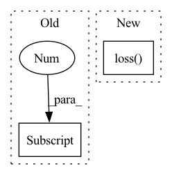

Pattern ID :38542

Before Change
y_hat = self(windows_batch) // [B, seq_len, H, output]
// Remove last y_hat dimension if unidimensional loss (for MAE, RMSE, etc.)
if y_hat.shape[-1] == 1:
y_hat = y_hat.squeeze(-1)
loss = self.loss(y=outsample_y, y_hat=y_hat, mask=outsample_mask)
After Change
scale=None,
mask=outsample_mask)
else:
loss = self.loss(y=outsample_y, y_hat=output[0], mask=outsample_mask)
self.log("train_loss", loss, batch_size=self.batch_size, prog_bar=True, on_epoch=True)
return loss
In pattern: SUPERPATTERN
Frequency: 5
Non-data size: 2
Instances
Fragment ID: 110249706
Project Name: nixtla/neuralforecast
Commit Name: 2fe7f2135a0e9d7e76744f0b541c120816949d87
Time: 2022-11-24
Author: kin.gtz.olivares@gmail.com
File Name: neuralforecast/common/_base_recurrent.py
M Class Name: BaseRecurrent
N Class Name: BaseRecurrent
M Method Name: training_step(3)
N Method Name: training_step(3)
M Parent Class: pl.LightningModule
N Parent Class: pl.LightningModule
M File Name: neuralforecast/common/_base_recurrent.py
N File Name: neuralforecast/common/_base_recurrent.py
M Start Line: 244
M End Line: 250
N Start Line: 246
N End Line: 258
'>
Before Change
// scores: B x N x num_classes
scores = model(inputs)
labels = batch_data[1]
scores, labels = self.filter_valid(scores, labels, device)
logp = torch.distributions.utils.probs_to_logits(
scores, is_binary=False)
After Change
for idx, inputs in enumerate(tqdm(valid_loader,
desc="validation")):
results = model(inputs["data"])
loss, gt_labels, predict_scores = model.loss(
Loss, results, inputs, device)
acc = Metric.acc(predict_scores, gt_labels)
iou = Metric.iou(predict_scores, gt_labels)
self.valid_losses.append(loss.cpu().item())
'>
Fragment ID: 110249707
Project Name: isl-org/open3d-ml
Commit Name: 89937ebfc8ba0757f2626e88d4243cc88fd61a84
Time: 2020-08-20
Author: yilingq@umd.edu
File Name: ml3d/torch/pipelines/semantic_segmentation.py
M Class Name: SemanticSegmentation
N Class Name: SemanticSegmentation
M Method Name: run_train(2)
N Method Name: run_train(2)
M Parent Class:
N Parent Class:
M File Name: ml3d/torch/pipelines/semantic_segmentation.py
N File Name: ml3d/torch/pipelines/semantic_segmentation.py
M Start Line: 159
M End Line: 268
N Start Line: 157
N End Line: 258
'>
Before Change
)
source_total_persistence = persistence_0d.pow(2).sum() + persistence_1d.pow(2).sum()
target_total_persistence = _total_persistence(pd_target[0]) + _total_persistence(pd_target[1])
loss = torch.abs(source_total_persistence - target_total_persistence)
return loss
After Change
(creators_1d, destroyers_1d), 1
)
loss = self.loss(
[persistence_diagram_0d, persistence_diagram_1d]
)
return loss
'>
Fragment ID: 110249704
Project Name: aidos-lab/pytorch-topological
Commit Name: d22e852996713c008612ec96df10e82e4ba32186
Time: 2021-12-06
Author: bastian@rieck.me
File Name: pytorch_topological/nn/vietoris_rips.py
M Class Name: ModelSpaceLoss
N Class Name: ModelSpaceLoss
M Method Name: forward(1)
N Method Name: forward(1)
M Parent Class: nn.Module
N Parent Class: nn.Module
M File Name: pytorch_topological/nn/vietoris_rips.py
N File Name: pytorch_topological/nn/vietoris_rips.py
M Start Line: 76
M End Line: 122
N Start Line: 118
N End Line: 128
'>
Before Change
outsample_mask = outsample_mask[:, -val_windows:-1, :]
// Remove last y_hat dimension if unidimensional loss (for MAE, RMSE, etc.)
if y_hat.shape[-1] == 1:
y_hat = y_hat.squeeze(-1)
loss = self.loss(y=outsample_y, y_hat=y_hat, mask=outsample_mask)
After Change
if self.loss.is_distribution_output:
distr_args = [arg[:, -val_windows:-1, :, :] for arg in output]
loss = self.loss(y=outsample_y,
distr_args=distr_args,
loc=None,
scale=None,
mask=outsample_mask)
else:
y_hat = output[:, -val_windows:-1, :, :]
loss = self.loss(y=outsample_y, y_hat=y_hat, mask=outsample_mask)
'>
Fragment ID: 110249705
Project Name: nixtla/neuralforecast
Commit Name: f22bf6b6c9e16557938ceff48393befa938d3d43
Time: 2022-11-24
Author: kin.gtz.olivares@gmail.com
File Name: neuralforecast/common/_base_recurrent.py
M Class Name: BaseRecurrent
N Class Name: BaseRecurrent
M Method Name: validation_step(3)
N Method Name: validation_step(3)
M Parent Class: pl.LightningModule
N Parent Class: pl.LightningModule
M File Name: neuralforecast/common/_base_recurrent.py
N File Name: neuralforecast/common/_base_recurrent.py
M Start Line: 280
M End Line: 292
N Start Line: 280
N End Line: 299